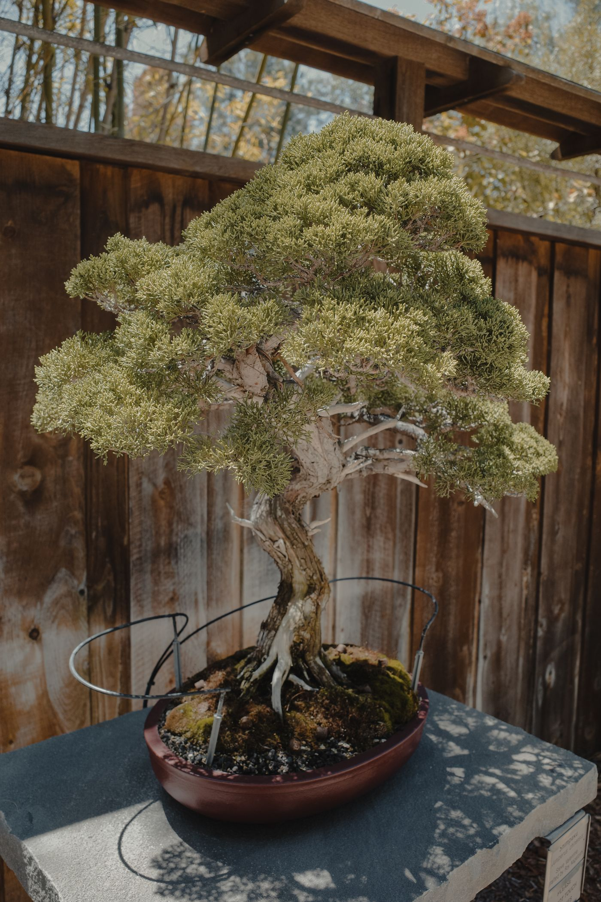

No. 01 · 2001 – present
The Gatekeeper — twenty-four years of one juniper
- Species
- Shimpaku juniper
- Material
- Collected stock, bought 2001
- Age
- Est. 70–90 years
- Height
- 58 cm
- Pot
- Unglazed Tokoname oval
- Status
- Never for sale
The brief
There was no client and no deadline. The tree arrived in 2001 as collected material: a thick, characterful trunk with one live vein and a tangle of weak growth. The brief the nursery set itself was simple — find out what tree was inside it, and take as long as that took.
The decisions
- 2001Potted into a wooden training box and left entirely alone. No styling, no carving — a collected tree's first year is for roots, not ideas.
- 2004First styling: the dead branches were kept, not cut away. The decision that defines the tree — the deadwood is its history, and the live vein would be trained to spiral against it.
- 2008Deadwood carved by hand over one winter, a little each week, following the grain the tree had already made. Power tools were used only to open the first channels.
- 2012First bonsai pot. Eleven years after arrival. The foliage pads were separated and the tree was photographed properly for the first time.
- 2019A drought summer cost the tree its lowest branch. The design was rebalanced around the loss rather than disguised — the record notes it as a change, not a failure.
- 2025Refinement only: pad thinning, lime sulphur on the deadwood, and the decision — renewed every year — not to sell it.
The outcome
The Gatekeeper stands by the nursery entrance and sets the standard for everything behind it. It has been offered serious money twice. It stays because a nursery that sells its best tree in its first good year has misunderstood the job: some trees are the argument the whole place is making.